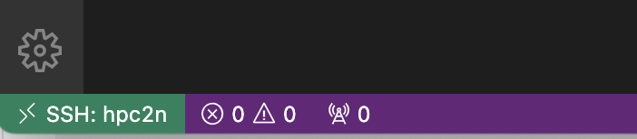

Connect to the server
For this course, we will be working on a remote server, HPC2N. You should already have applied for a user account there. If you haven’t, do it now.
Here, you will access the server for the first time. You will need a terminal, your user name and the temporary password you will have gotten from HPC2N.
If you have forgotten your password, or it’s no longer valid, you can re-set it using the Password reset service.
For the sake of simplicity we will teach you the way to use tools on Linux subsystems only. Hence, if you have a Windows PC or laptop you need to set up a way to access a Linux terminal. You can find plenty of tutorials online to do this, but here are some steps that should be easy enough to follow:
- type in the bottom left search bar “powershell”, right-click on the result and select “run as administrator”
- copy-paste in the window you opened the following command:
wsl --install- reboot your system
- open the Microsoft store and search for Ubuntu
- install Ubuntu 22.04.3 LTS
- launch it, set a username and a password
Access server via VScode
We can use VScode to connect to the server. For this, we need to install the remote SSH extension from within VScode.
In the side bar, click on the extensions symbol (looks like building blocks), and search for remote SSH. Click then on install in the lower right corner.
add new SSH host
- Open the Command Palette (View -> Command Palette).
- Type
Remote-SSHand selectRemote-SSH: Add New SSH Host. - Type
ssh username@kebnekaise.hpc2n.umu.se, where you substitute “username” with your HPC2N user name. - If VScode cannot automatically detect the trype of server you need to select
Linux. - You will be asked to pick a SSH configuration file to update. Choose the default (top of the list
.ssh/config).
connect to server
- Type
Remote-SSHand selectRemote-SSH: Connect to Host. - Select the HPC2N server.
- type in your password.
After a bit of setting up you will see in the bottom left corner the verification that you are connected to the server:

In the welcome mail you got when your HPC2N account was created there was a link to create a first, temporary password. When you have logged in using that, you need to change your password.
From the HPC2N documentation:
This is done using the passwd command:
passwdUse a good password that combines letters of different case. Do not use dictionary words. Avoid using the same password that you also use in other places.
- It will first ask for your current password. The first time you login, that will be the temporary password you created with the HPC2N password reset service.
- Type in that and press enter.
- Then type in the new password you want, enter, and repeat.
- You have changed the password.
You are now on connected to the login node of the cluster.
Read here more about HPC cluster architecture. Read until the header MPI.
This location is the home folder of your account.
Open up the terminal in VScode (View -> Terminal), and you are ready for the next chapter, learning (or repeating) the basics of the command line.